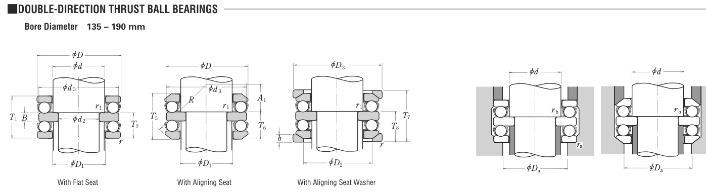

52234 is a NSK thrust bearing, bore 170 mm, O.D. 240 mm, dynamic rating 280 kN, limiting speed 800 rpm. Dimensions, drawing, interchanges and price.

Scanned from the manufacturer catalogue page listing this part number. All part numbers printed on that table share the same drawing.
Blue = inner / outer ring, yellow = rolling element. Drawn to scale from this part's own dimensions for selection reference only - not a manufacturing or assembly drawing.
| Symbol | Dimension | mm | inch |
|---|---|---|---|
| d | Bore diameter | 170 | 6.6929 |
| D | Outside diameter | 240 | 9.4488 |
| r | Chamfer (min) | 1.5 | 0.0591 |
Thrust bearing ratings are axial values Ca / Coa; T is the overall height. Weights are given in kg. Load ratings are shown in both the original catalogue units and the converted value (1 N = 0.2248 lbf). Data is provided for selection reference only - confirm against the latest official catalogue before ordering.
| Bore d (mm) | 170 |
|---|---|
| Outside dia. D (mm) | 240 |
| Basic dynamic axial rating Ca (lbs) | 62947 |
|---|---|
| Basic static axial rating Coa (lbs) | 205700 |
| Basic dynamic axial rating Ca (N) | 280000 |
| Basic static axial rating C0a (N) | 915000 |
| Limiting speed - grease (rpm) | 800 |
| Limiting speed - oil (rpm) | 1,200 |
| Weight (kg) | 15.2 |
|---|
| Housing fillet r max (mm) | 1.5 |
|---|---|
| Chamfer r1 min (mm) | 1.1 |
| C / P | Equivalent load P (N) | L10 (106 rev) | L10h at 200 rpm |
|---|---|---|---|
| 4 | 70,000 | 102 | 8,466 |
| 6 | 46,667 | 392 | 32,708 |
| 8 | 35,000 | 1,024 | 85,333 |
| 10 | 28,000 | 2,154 | 179,536 |
| 15 | 18,667 | 8,323 | 693,622 |
Basic rating life per ISO 281: L10 = (C/P)10/3 with C = 280,000 N. Hours = L10 x 106 / (60n). Life-modification factors for lubrication, contamination and temperature (aISO) are not included.
| Brand | NSK |
|---|---|
| Source catalogue | NSK CAT. No. E1103 (metric) |
| Catalogue page | p.321 (dimensions) |
Load ratings in newtons, weights in kg, limiting speeds for grease and oil lubrication.
| Designation | Brand | Type | d | D | B/T | Dyn. rating | kg |
|---|---|---|---|---|---|---|---|
| 29334 | NSK | Thrust | 170 | 280 | 67 | 1050 kN | 14.8 |
| 29334E | NSK | Thrust | 170 | 280 | 67 | 235,000 lbs | 14.742 |
| 29434 | NSK | Thrust | 170 | 340 | 103 | 375,000 lbs | 43.545 |
| 51134 | NSK | Thrust | 170 | 215 | 34 | 135 kN | - |
| 51334 | NSK | Thrust | 170 | 280 | 87 | 465 kN | 23.2 |
| 51434 | NSK | Thrust | 170 | 340 | 135 | 715 kN | 61.3 |
| 52334 | NSK | Thrust | 170 | 280 | None | 465 kN | - |
| 52434 | NSK | Thrust | 170 | 340 | None | 715 kN | - |
Send us the quantity you need and we will come back with price and lead time, normally within 24 hours. Equivalent parts from other brands can be quoted at the same time.